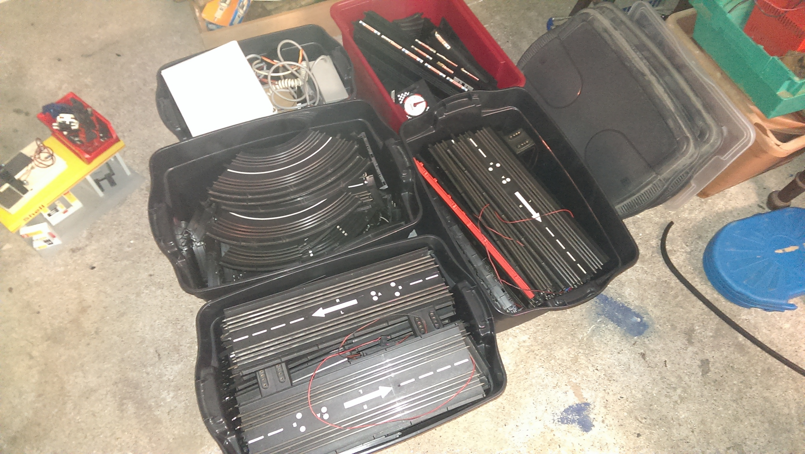
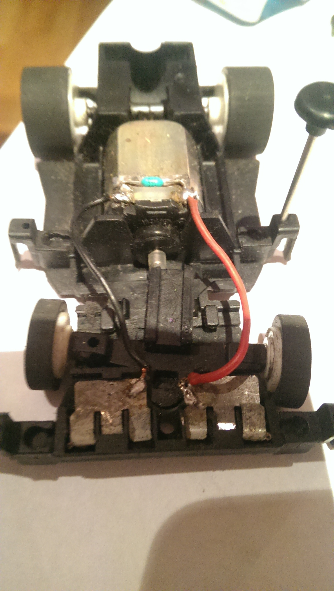

How to pimp my carrera Bahn
Wie ich meine alte Carrera Bahn getuned habe
Created by Sebastian Hardt / @SebasthSeppel
Eckdaten
- 1979 bis 2000
- Maßstab 1:40 daher 140
- Echter Spurwechsel möglich. Autos können auf beiden Seiten fahren. Heutzutage wird das mit Weichen gelöst.
- Verschiedene Typen von Autos V1, V2 und V3
- Verschiedene Schienen Varianten (dünne und breite Leiterbahnen)
- Spurgebundenens Fahren möglich.
Mein Weg zur Servo
1992 habe ich meine Bahn zu Wheinachten bekommen.
Weitere Schritte
- Wegen zu "fricklicken" Spurwechsel meistens Spurgebunden gefahren
- Vergessen bis 2001, wo ich Sie dann wieder in der WG aufgebaut habe. Leider war Sie dann im feuchten Keller :(
- 2005 habe ich bei Ebay ein "kleines" Päckchen (2mx2mx1m) weiterer Teile geschossen. My wife was not amused :P
- 2006 habe ich was vom Sperrmüll aufgesammelt und alte Schienen bei meinem Vatter im Keller gefunden.
- 2010 ein paar Autos geschossen auf der Bucht.
So sieht das dann aus ca 30 Meter Schiene :)
Wie funktioniert das nun ?
Für jedes Auto gibt es 2 Leiterbahnen auf jeder Seite der Schiene.
Auto kann auf Spur A oder B fahren
Lenkung
Beim Lenken wird der Strom umgepolt. Dabei dreht sich der Motor in die andere Richtung und die Lenkung wird umgestellt. Über ein Ritzel und die Fliegkraft fährt das Auto dabei immer geradeaus.
Regler
Geschwindigkeit
35 Ohm
Aufbau der
Variante
Nerviges Problem !!11!!
Die karren fliegen andauernd raus und man muss uffstehen :(
Einfache Lösung langes Kabel drann :)
OOOOOder ?
Lets pimp it :)
- Idee kam von: servospeedway.de
- Hatte ein paar Brocken üprig
- Nachteil das man den Sender umbauen muss wegen der Lenkung.
- Thomas davon erzählt, doch der hatte eine andere Idee: Nimm einen Arduino ! Ist gaaaaanz einfach
- Fand die erst solala, weil wegen Löten und blauen Qualm.
- Micromata HackerSpace Arduino Starter Pack.
Arduino UNO
|
Auslesen des Empfängers
Super einfach. Den Empfänger mit dem 5v und Gnd verbinden und einen Channel Pin an den Arduino anschliessen.

//setup
pinMode(steer1Pin, INPUT);
long initialSteer1 = pulseIn (steer1Pin, HIGH); // read initialsteer value
//loop
long steer1Value = pulseIn (steer1Pin, HIGH, 20000);
long steer1 = (steer1Value - initialSteer1);
steer1 = constrain (steer1, -600, 600);
Motor Steuerung
L298 H-Brücke nimt ein LowVoltage PWM Signal vom Arduino an und macht HighVoltage PWM für den Motor
Motor Steuerung PWM
Motor Steuerung Code
// setup
pinMode(_motorPin1,OUTPUT);
pinMode(_motorPin2,OUTPUT);
// loop
if(_steerRight == true) {
digitalWrite(_motorPin1, LOW);
analogWrite(_motorPin2,_thrust);
} else {
digitalWrite(_motorPin2, LOW);
analogWrite(_motorPin1,_thrust);
}
Rundenzähler
Verinfacht ein Schalter auf einen Pin gelegt. Wenn dieser geschlossen ist, hat ein Auto eine Runde beendet.
Debouncing damit ein bischen Zeit vergeht bis wieder ausgelesen wird.
Interrupt von nöten sonst kann es sein das der Arduino nichts mitbekommt.
Startampel
- Erst mit einem Shieberegister gelöst, was aber viel Kabellage mit sich brachte :(
- Aber: Schieberegister ist einfach mit Arduino
- ws2812 onewire LED Streifen: günstig, RGB, FastLed Libary für Arduino

Serial
Wenn man Daten auslesen oder schicken will an den Arduino, kann man ein eignes Protokoll über Serielle-Schnittstelle machen.
Serial.print(currStartLight);
Serial.print(",");
Serial.print(powerOn);
Serial.print(",");
Serial.print(thrust1);
Serial.print(",");
Serial.print(right1);
Serial.println("");
Mein Protokoll
-1,0,0,1,50000,0,0,0,50000,0,40917,0,41045,0
- Licht: -1 aus, 1-4 Licht an
- Bahn Strom an oder aus
- Auto A links oder rechts
- Auto A Power 0-255
- Auto A Tankfüllung
- Auto A Auftankrestzeit
- Auto B links oder rechts
- Auto B Power 0-255
- Auto B Tankfüllung
- Auto B Auftankrestzeit
- Auto A Rundenzeit
- Auto A Runde beendet
- Auto B Rundenzeit
- Auto B Runde beendet
Oberfläche:
- Serial gibt die Möglichkeit eine Klicki Bunti Oberfläche zu bauen.
- Erste Versuche mit JavaFx mit dem ich aber nicht warm geworden bin.
- Jetzt eine Play Applikation mit Websocket Kommunikation und JS Oberfläche.
- Fummelig war die Java Serial Libary.